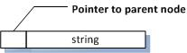
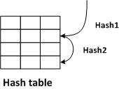

I'm going to describe a tool I wrote to find duplicate files. I had a bunch of hard drives I wanted to get rid of. These were a few hundred megabytes to a few gigs, and I wanted to copy them all to a big terabyte hard drive. These drives were mostly backups of files, but they might have other stuff on them. Once I copied the drive, I wanted to eliminate duplicates that had accumulated.
The tool is pretty straightforward:
For each file in file system
{
Read each block in file, computing its hash or check value (e.g. SHA1)
Store the result in a hash table, along with a name/path
If there is already an entry that has the same hash value, report it and the paths
}
There are a couple of interesting structures. First is how the path names for the file are tracked. The second is the hash table.
The file names are tracked with a linked list, as a convenience:

This allows the code to scan the file system be a recursion over the directories in the file system.
NameNode* Root = NULL;
ScanDir(NameNode* Dir)
{
For each file in Directory (skipping '.' and '..')
{
Allocate node
Set parent to Dir
Copy local name into node if (File is another directory)
{
ScanDir(Node);
continue;
}
Read each block in file, computing its hash or check value (e.g. SHA1)
Store the result in a hash table, along with its name node
If there is already an entry that has the same hash value, report it and the paths
}
This has the small advantage of keeping memory fairly low per file as well. The files hash value is 20 bytes, or so, and is fixed. The file name ranges 8 to 20 typically - but the full path is much longer than 20.
The second is the hash table (a hash table of hashes, if you think about it). The key is the file checksum (hash), with the path being the value to retrieve. I happen to like probing hash tables that use two hash values. I double hash the file checksum into two different 32-bit hash values.

The algorithm stops searching the hash table when it runs into an empty slot. When it stores a value, it puts an entry in there. When the table drops below a critical number of empty slots, it resizes the table. This involves creating a hash table that is at least twice as big, and is a prime number. (I use a table of very large primes).
This is an introduction to what I've got planned for next time: find duplicate portions of files, and copy-and-pasted source code.